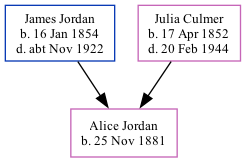

Alice Ann Harriet Jordan 1881 -
[ Home ] | [ Calendar ] | [ Surnames Index ] | [ Family History ]A cook and the daughter of James Jordan (a horse keeper) and Julia CulmerAlice Jordan, the second cousin twice-removed on the mother's side of Nigel Horne, was born in Faversham, Kent, England on Nov 25, 18811,2 and baptized there at St Mary of Charity Church, Church Road on Dec 21, 1881.
Throughout her life, she lived at 2 Mill Place in Faversham on Apr 5, 18913; and at Hazelbourne, Dorking, Surrey, England on Apr 2, 19114.
Parents
- James was born on Jan 16, 1854
- Julia was born on Apr 17, 1852
Citations
- England & Wales births 1837-2006 - Findmypast
- Kent, Canterbury Archdeaconry Baptisms - Findmypast
- 1891 England, Wales & Scotland Census - Findmypast (was age 9 and the daughter of the head of the household)
- 1911 Census for England & Wales - Findmypast (was age 29)
Media
Kent, Canterbury Archdeaconry baptisms 1538-1912 - GBPRS/CANT/B/96259281
England & Wales births 1837-2006 - BMD/B/1882/1/AZ/000320/190
England Births & Baptisms 1538-1975 - R_885849875
1911 Census For England & Wales - GBC-1911-RG14-03182-0203-5
Family Tree
Generated by ged2site. Last updated on Nov 13, 2024